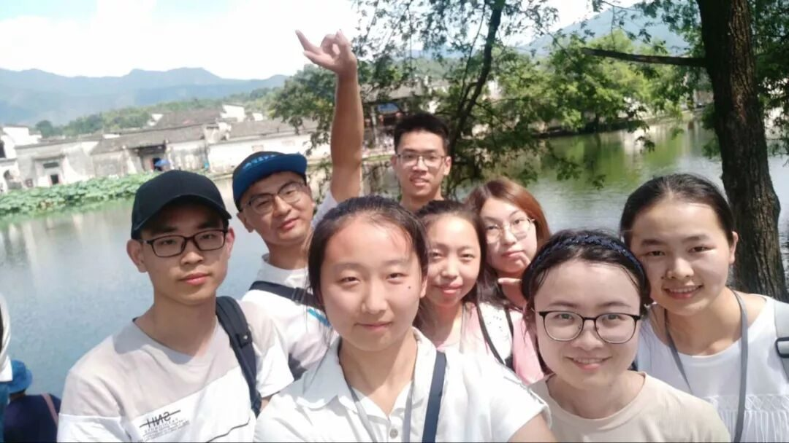
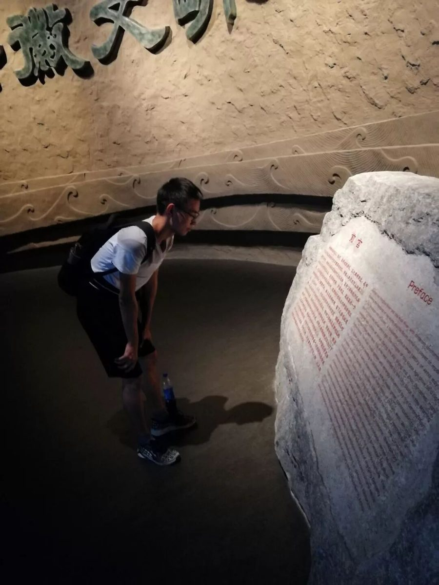
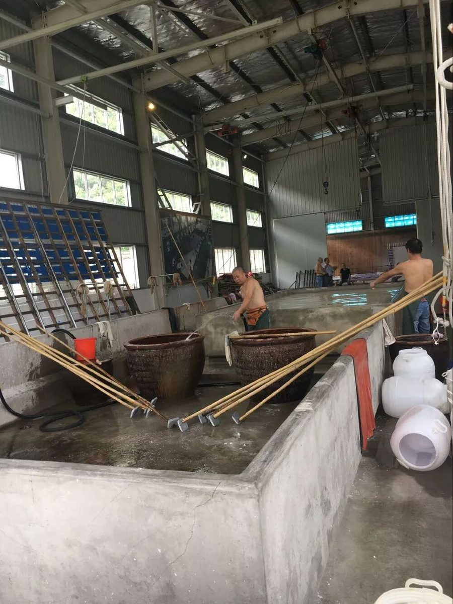
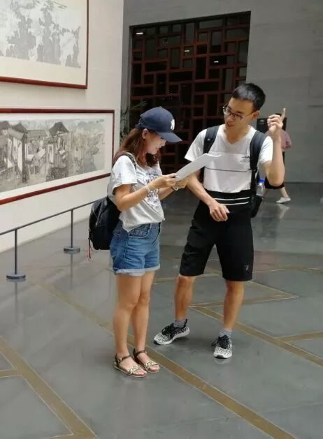
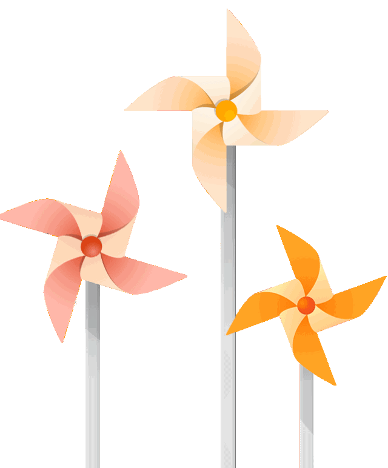
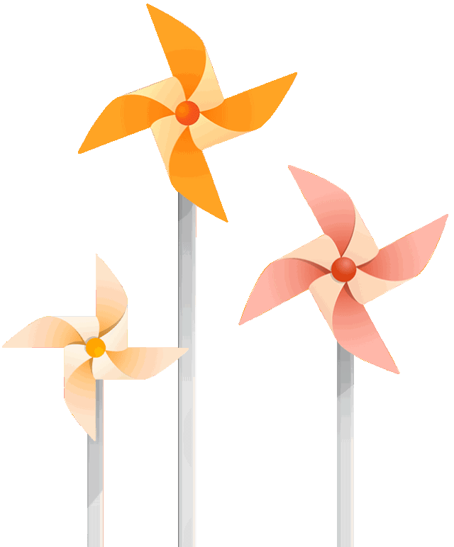

【素笺寄情·十二】非吾讷于书华章，简言相送便真情

【素笺寄情·十二】
非吾讷于书华章，简言相送便真情
输
在大学，总要做几件值得怀念 的事，我想参加行者无疆便是其中之一吧，虽然这期一路走过来有点坎坷，但我从不退缩，反而觉得更加有意义。

八月，我在火车站里为赶车奔跑过，为到酒店在烈日拖着行李箱抱怨过，为躲雨和小伙伴在水中奔跑过，也为完成任务在深夜哼着小调熬夜过，这次实践总的来说，我去了很多地方收获也很多，那张被握过的车票，那双被雨淋湿的鞋子，便见证了第一天的全部，在中国非物质文化遗产园里亲眼看到了精美的木雕，石雕等，在感叹赞许古时徽州人的技艺时也要吐槽相关工作人员的不负责任，不希望仅仅只是借非遗文化之名获得利益，应该更多的是尊重和保护，这也是我们团队的初衷。在安徽博物馆里，听导游讲解了古老神秘的徽州古建筑里长鸣钟与平和镜摆放大厅的含义，了解了笔墨纸砚之间的历史故事，在如画一般的宏村，沿途看到了很多学生在垂柳下写生，他们的画笔下皖南徽派建筑，委婉却不沧桑，十分动容，脚下的青砖虽已破裂，但是它见证了徽商的繁荣兴衰，因为宏村是古代徽商赴京经商的必经之路，这也就是后来的画里乡村。
02

告别青砖石瓦，冒着酷暑辗转来到了宣纸文化园，这里也许是我印象最深刻的地方，在这里我看到了草和枝条是怎样一步步变成我们手写的宣纸，还遇到了大国工匠的宣纸师傅，师傅为我们简单讲解的同时也表示非常看好非遗文化，应该传承下去。在砖雕厂中，吹着电风扇和老师傅谈心，听老师傅为我们讲解他与砖雕的渊源，老师傅身为大国工匠还保持着纯良的道德职业操守，不骄不躁，让我十分敬佩，现在想想这一路所遭遇艰苦都是值得的，寻良师，觅好友，见美景这每一件所经历的都很满足。
03

在行者无疆团队中，我为调研组的一员，在实际调研过程中我也是四处碰壁，甚至有时候想放弃，初次发放问卷在安徽博物馆，馆内工作人员态度恶劣阻挡我们发放问卷，有些游客漠不关心甚至把我们当作传销组织，我还记得给一个高中生发放问卷时，她没有接受反而无情地对我说，“对不起，我是小学生”当时我真的心的碎了，觉得很累想放弃，但是每当看到大家还在努力时，我又新站起自信的对他们说“你好，我们是大学生文化调研团队……”,这次调研当然除了坎坷也有欣喜，我们遇到了18级的亲学弟，在那瞬间感觉心很暖很暖，这段亲身参与的经历让我内心变得更加强大，在学会与人打交道的同时也学了如何更好尊重理解他人，可以说不负这段旅程吧。
在这期行者无疆中，我认识了他们非常优秀的成员，队长的细腻缜密的思考，成员刻苦勤奋的执行，无不让我触动，我只想说，与你们相遇，便是最好的礼物，并不是我不善于写华丽词藻，是因为最真实的用最简单就够了，爱你们！
小编为大家送福利，偷偷告诉你，点击下方阅读原文，即可获取这个小哥哥担任主播的电台节目哦！

图片｜沈华，盛暘
文案｜江新林
排版｜潘雯雯
审核｜应雨珊 潘雯雯
